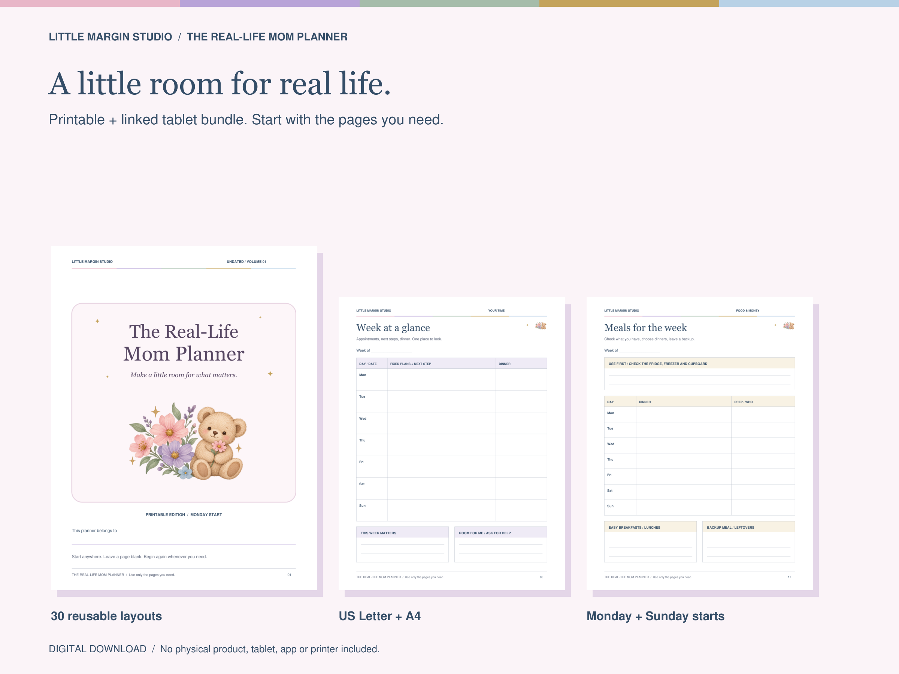
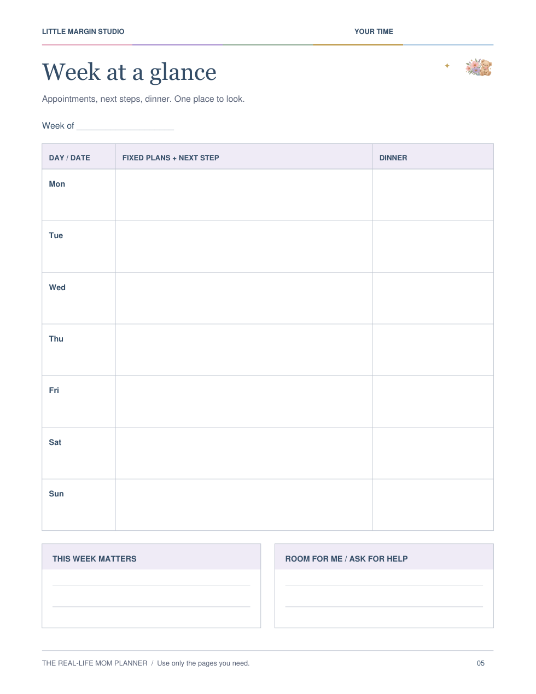

Reset.
Gather loose ends. Choose up to three things that matter. Decide what can wait.
THE REAL-LIFE MOM PLANNER
Your people. Your plans. The everyday details.
A practical place for the week—with space for you, too.
Printable + linked tablet PDFs · Undated

FOR ALL THE LITTLE THINGS
The week can fill up before you've put anything on paper. Give the details somewhere to go, see what is fixed, and choose the next useful step.
Start with three pages. Add the others when they help. Leave them blank when they don't.
TAKE A CLOSER LOOK
These previews are rendered from the actual PDFs. Explore a few favorites, then download the sample to try them yourself.
01 / YOUR TIME
Keep commitments, your next useful step and dinner in one view. Space below is yours for priorities, personal time or support.
Includes one fictional filled-in week and four blank layouts.

A SMALL ROUTINE. YOUR OWN WAY.
Gather loose ends. Choose up to three things that matter. Decide what can wait.
Write down fixed commitments and realistic dinners. Leave space between the plans.
Share a whole task, simplify a busy day, or make time for something you enjoy.
No perfect streak required. Begin again whenever you need.
ONE BUNDLE. TWO WAYS TO USE IT.
Both are included. Choose one to start—you don't need to maintain two versions of your week.
01 / PRINT & WRITE
Four PDF editions. Printer, paper and supplies not included.
02 / TAP & PLAN
Two PDF editions. Requires a PDF annotation app and device, purchased separately if needed.
The tablet page count includes repeated month and week layouts. No calendar sync, reminders, automatic totals or built-in fillable fields.
THE COMPLETE TOOLKIT
THE REAL-LIFE MOM PLANNER
Explore the sample first. Try writing a real week, check the space, and see whether it fits your life.
PRINTABLE + TABLET BUNDLE
$19 USD
Planned bundle price · Sales open soon
Explore the free sampleDigital files only. No physical product.
Personal household use.
BEFORE YOU CHOOSE
No. This is a PDF download product. The complete bundle is prepared as three ZIP folders plus a quick-start PDF. You need to extract the ZIP files before use.
Yes. Every calendar is undated. Write in your own dates and choose Monday or Sunday as the start of your week.
A device and app that support PDF annotations and internal PDF links. Try the free sample in your own app. Actual Goodnotes or Notability device testing has not yet been completed for this edition. App and device costs are separate.
There are no built-in fillable fields. You can use handwriting or text annotations if your app supports them. This is not an editable Canva template, and the headings and layout are fixed.
No. These are PDF pages. They do not sync with calendars, send notifications, automatically total budgets or share live updates between family members.
You may print and annotate the planner for personal household use and share working pages with your household's caregivers. You may not resell, redistribute or publicly upload the blank files. Your app may let you duplicate pages; copied links can still point to the original destinations.
The family-week page has four person columns. Use names or roles and duplicate it if needed. Owner and caregiver pages can work with partners, relatives, friends or solo planning. It focuses on everyday and school-age family logistics, not newborn feeding or medical tracking.
Not yet. The full bundle is being prepared for sale. You can download the free sample now, without an email address. Purchase terms and the support route will be available through the selling platform when sales open.